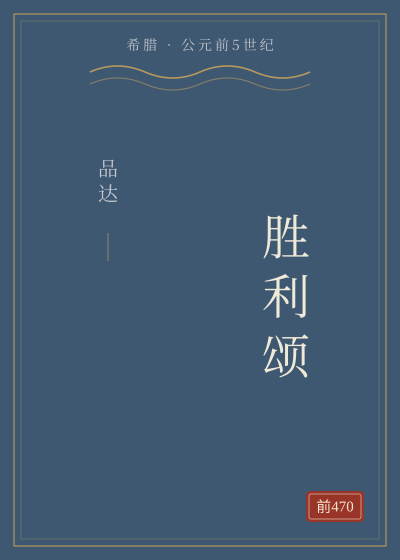
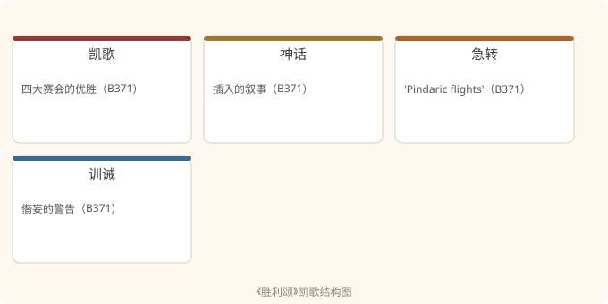

胜利颂
一、基本信息
| 作者 | 品达 |
|---|---|
| 成书/出版 | 约公元前5世纪（Britannica B371：四卷竞技凯歌——44首完整传世——古代17卷唯此四卷完整） Pindar — Encyclopaedia Britannica（百科全书） |
| 国别/地区 | 希腊 |
| 时代 | 古代 · 公元前5世纪 |
| 体裁 | 合唱凯歌（四卷44首） |
| 语言 | 希腊语（多利安方言） |

《胜利颂》凯歌结构图（主题·结构图）
二、创作背景
Britannica（B371）：'master of epinicia'——颂奥林匹克/皮提亚/地峡/尼米亚四大赛会优胜者——共44首按赛会分卷。
Britannica（B371）：风格——神话叙事、僭妄训诫、'no two odes alike'、'Pindaric flights'。
Britannica（B371）：贵族法则——荷马名言'ever to excel and to surpass other men'。
三、内容脉络
（通说待核）凯歌的典型结构：赛况—神话—训诫—祝福。
（通说待核）'奥林匹亚颂'之首（为希耶罗作说——通说待核）。
四、主要人物表
| 人物 | 身份 | 说明 |
|---|---|---|
| 优胜者 | 受颂者 | （B371：victors at the games） |
| 神话人物 | 插入的叙事 | （B371：mythic narratives） |
五、主题与艺术特点
- 竞技凯歌的仪式（B371）。
- 'Pindaric flights'的急转（B371）。
- 僭妄（hubris）的训诫（B371）。
六、影响与评论
- Britannica：'ancient Greece's greatest lyric poet'（B371）。
Pindar — Encyclopaedia Britannica（百科全书） - Britannica：四卷完整传世（或因2世纪教科书使用——B371）。
Pindar — Encyclopaedia Britannica（百科全书）
七、阅读建议
难点
- 多利安方言（读译本）。
- '品达体'颂歌的结构。
- 《胜利颂》中译名（《奥林匹亚颂》等——通说待核）。
- 希腊语原版（公有领域）。
古希腊抒情诗首选；与萨福残篇对读。
八、待核实
- 44首篇数核对（B371口径）。
- '首奥林匹克凯歌'细节待核。
- 'Pindaric flights'术语通行译名待核。
本页主要来源
品达的其他收录作品：胜利颂